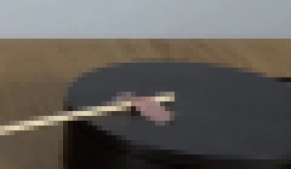
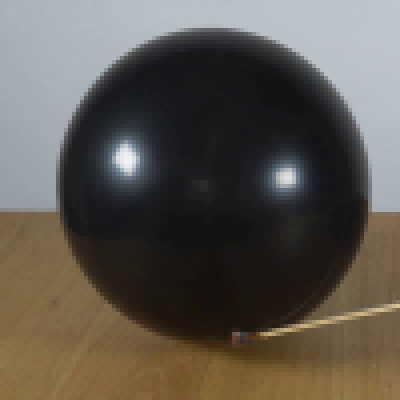
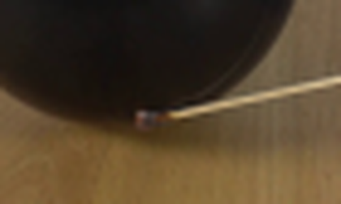

CODING AGENTS AS PIXEL WORLD MODELS
traex/Seed-2.1-Pro-0915 · 0113
尚未保存可播放视频
Static locked-off single-shot with fixed frame throughout filmed with constant framerate in real-time. The scene shows a realistic scientific demonstration. The scene only contains the described setup and actions. The black balloon was placed on a wooden table next to the black platform. The lit match is attached to the black platform. The lit match rotates clockwise on the black platform and touches the black balloon.
failed逐轮保存的候选
回放视频、检查图与代码变化。
每份候选均可单独播放。实际图片检查记录在下方工具轨迹中。
可观测工具轨迹
实际执行的命令与返回图片。
命令 1exit 0
/bin/bash -lc 'cat prompt.txt; echo "---"; cat GENERATION_RULES.md; echo "---"; ls -la'
命令 2exit 0
/bin/bash -lc "cat artifact_io.py; echo \"---\"; python3 -c \"
from PIL import Image
im = Image.open('first_frame.png')
print(im.size, im.mode)
\""命令 3exit 0
/bin/bash -lc "python3 -c \"
import importlib
for m in ['numpy','PIL','cv2','scipy','skimage']:
try:
mod=importlib.import_module(m)
print(m, getattr(mod,'__version__','ok'))
except Exception as e:
print(m, 'MISSING', e)
\""命令 4exit 0
/bin/bash -lc "cd .tmp && python3 -c \"
from PIL import Image
im = Image.open('../first_frame.png')
# crop regions: match head, pivot area, full lower half
im.crop((80,80,200,110)).resize((480,120), Image.Resampling.NEAREST).save('crop_stick.png')
im.crop((160,55,220,90)).resize((360,210), Image.Resampling.NEAREST).save('crop_pivot.png')
im.crop((40,10,140,110)).resize((400,400), Image.Resampling.NEAREST).save('crop_balloon.png')
print('done')
\""命令 5exit 0
/bin/bash -lc "cd .tmp && python3 << 'EOF'
import numpy as np
from PIL import Image
im = np.array(Image.open('../first_frame.png').convert('RGB')).astype(float)
h,w,_ = im.shape
print(\"shape\", im.shape)
# Balloon: very dark region in upper-left/mid area, distinct from platform
gray = im.mean(2)
dark = gray < 55
# Restrict to balloon zone x<150
ys,xs = np.where(dark & (np.indices((h,w))[1] < 150))
print(\"balloon dark bbox x:\", xs.min(), xs.max(), \"y:\", ys.min(), ys.max())
print(\"centroid\", xs.mean(), ys.mean(), \"n\", len(xs))
# match stick: bright yellowish pixels. color: high R,G ~ 200, B lower
r,g,b = im[...,0],im[...,1],im[...,2]
stick = (r>150)&(g>130)&(b<140)&(r-b>40)
ys,xs = np.where(stick)
print(\"stick bbox x:\", xs.min(), xs.max(), \"y:\", ys.min(), ys.max(), \"n\", len(xs))
# fit line to stick pixels
A = np.polyfit(xs, ys, 1)
print(\"stick line y = m*x+c:\", A)
# endpoints: min and max x pixel y values
for xq in [xs.min(), xs.max()]:
sel = xs==xq
print(\"x\",xq,\"y mean\", ys[sel].mean())
# angle
ang = np.degrees(np.arctan2(-A[0], 1)) # image coords slope dy/dx
print(\"angle from +x axis (deg, screen):\", np.degrees(np.arctan(A[0])))
EOF"命令 6exit 1
/bin/bash -lc "cd .tmp && python3 << 'EOF'
import numpy as np
from PIL import Image
im = np.array(Image.open('../first_frame.png').convert('RGB')).astype(float)
h,w,_ = im.shape
r,g,b = im[...,0],im[...,2]
R,G,B = im[...,0],im[...,1],im[...,2]
# Pink pivot: R notably > G and B, mid brightness
pink = (R>90)&(R-G>25)&(R-B>25)
ys,xs=np.where(pink)
print(\"pink n\",len(xs))
if len(xs):
print(\"pink bbox x\",xs.min(),xs.max(),\"y\",ys.min(),ys.max(),\"centroid\",xs.mean(),ys.mean())
# platform: dark region on right, x>170
gray=im.mean(2)
dark = gray<60
yy,xx=np.where(dark & (np.indices((h,w))[1]>165))
print(\"platform dark bbox x\",xx.min(),xx.max(),\"y\",yy.min(),yy.max(),\"n\",len(xx))
# match head dark red at left tip: sample colors around (100,94)
for y in range(90,98):
row=[]
for x in range(96,110):
row.append(tuple(im[y,x].astype(int)))
print(y, row)
EOF"命令 7exit 0
/bin/bash -lc "cd .tmp && python3 << 'EOF'
import numpy as np
from PIL import Image
im = np.array(Image.open('../first_frame.png').convert('RGB')).astype(float)
h,w,_ = im.shape
R,G,B = im[...,0],im[...,1],im[...,2]
pink = (R>90)&(R-G>25)&(R-B>25)
ys,xs=np.where(pink)
print(\"pink n\",len(xs))
if len(xs):
print(\"pink bbox x\",xs.min(),xs.max(),\"y\",ys.min(),ys.max(),\"centroid\",round(xs.mean(),1),round(ys.mean(),1))
gray=im.mean(2)
dark = gray<60
yy,xx=np.where(dark & (np.indices((h,w))[1]>165))
print(\"platform dark bbox x\",xx.min(),xx.max(),\"y\",yy.min(),yy.max(),\"n\",len(xx))
print(\"colors near match head (y 90-98, x 96-110):\")
for y in range(90,99):
print(y, [tuple(im[y,x].astype(int)) for x in range(96,111,2)])
EOF"命令 8exit 0
/bin/bash -lc "cd .tmp && python3 << 'EOF'
import numpy as np
from PIL import Image
im = np.array(Image.open('../first_frame.png').convert('RGB')).astype(float)
R,G,B = im[...,0],im[...,1],im[...,2]
# pink on platform only: region x 170-210, y 68-90
sub = (R>110)&(R-G>18)&(R-B>18)
mask = np.zeros_like(sub); mask[68:92,170:212]=True
m = sub&mask
ys,xs=np.where(m)
print(\"pivot pink n\",len(xs),\"bbox x\",xs.min() if len(xs) else None,xs.max() if len(xs) else None,\"y\",ys.min() if len(xs) else None,ys.max() if len(xs) else None)
if len(xs): print(\"centroid\", round(xs.mean(),1), round(ys.mean(),1))
# stick endpoint at pivot: find bright stick pixels right side
stick = (R>150)&(G>130)&(B<140)&(R-B>40)
ys,xs=np.where(stick & (np.indices(im.shape[:2])[1]>150))
print(\"stick right part bbox x\",xs.min(),xs.max(),\"y\",ys.min(),ys.max())
# print actual colors in pivot zone
for y in range(72,86,2):
print(y,[tuple(im[y,x].astype(int)) for x in range(176,206,3)])
EOF"命令 9exit 0
/bin/bash -lc "cd .tmp && python3 << 'EOF'
import numpy as np
from PIL import Image
im = Image.open('../first_frame.png').convert('RGB')
im.crop((92,86,116,102)).resize((240,160), Image.Resampling.NEAREST).save('crop_head.png')
a=np.array(im).astype(float)
gray=a.mean(2)
# balloon silhouette: dark pixels, exclude platform (x>165) and table (y>100)
mask=(gray<70)
yy,xx=np.indices(gray.shape)
mask &= (xx<150)&(yy<102)
ys,xs=np.where(mask)
# fit circle via least squares on edge-ish points: use all dark pixel boundary
# use algebraic circle fit
A=np.c_[2*xs,2*ys,np.ones_like(xs)]
b=xs**2+ys**2
sol,_,_,_=np.linalg.lstsq(A,b,rcond=None)
cx,cy,c=sol
r=np.sqrt(c+cx**2+cy**2)
print(\"circle fit (all dark): center\",round(cx,2),round(cy,2),\"r\",round(r,2),\"n\",len(xs))
# edge-based fit: pixels in mask whose neighbor is outside
from scipy import ndimage
er=ndimage.binary_erosion(mask)
edge=mask&~er
ys,xs=np.where(edge)
A=np.c_[2*xs,2*ys,np.ones_like(xs)]
b=xs**2+ys**2
sol,_,_,_=np.linalg.lstsq(A,b,rcond=None)
cx,cy,c=sol
r=np.sqrt(c+cx**2+cy**2)
print(\"circle fit (edge): center\",round(cx,2),round(cy,2),\"r\",round(r,2),\"n\",len(xs))
res=np.sqrt((xs-cx)**2+(ys-cy)**2)-r
print(\"resid std\",round(res.std(),2))
# bottom edge near x=100
for xq in [95,100,105,110]:
col=mask[:,xq]
ys2=np.where(col)[0]
print(\"x\",xq,\"dark y range\", (ys2.min(),ys2.max()) if len(ys2) else None)
EOF"命令 10exit 0
/bin/bash -lc "cd .tmp && python3 << 'EOF'
import numpy as np
from PIL import Image
a=np.array(Image.open('../first_frame.png').convert('RGB')).astype(float)
gray=a.mean(2)
yy,xx=np.indices(gray.shape)
for t in [60,75,90,105,120]:
mask=(gray<t)&(xx<150)&(yy<104)
ys,xs=np.where(mask)
print(\"t\",t,\"bbox x\",xs.min(),xs.max(),\"y\",ys.min(),ys.max(),\"n\",len(xs))
# Look at vertical cross-section at x=93: brightness vs y
print(\"column x=93:\")
for y in range(14,112,2):
print(y, int(gray[y,93]), int(gray[y,80]), int(gray[y,110]))
EOF"命令 11exit 0
/bin/bash -lc "cd .tmp && python3 << 'EOF'
from PIL import Image
im = Image.open('../first_frame.png').convert('RGB')
# region around balloon bottom / match head, smooth upscale
im.crop((70,70,140,112)).resize((420,252), Image.Resampling.LANCZOS).save('crop_contact.png')
EOF"命令 12exit 0
/bin/bash -lc "cd .tmp && python3 << 'EOF'
import numpy as np
from PIL import Image
a=np.array(Image.open('../first_frame.png').convert('RGB')).astype(float)
h,w,_=a.shape
gray=a.mean(2)
# horizon: find wall/table boundary per column (brightness/color change). print row 60-66 colors at x=200
for y in range(58,70,2):
print(\"y\",y,[tuple(a[y,x].astype(int)) for x in [10,50,150,200,240]])
# vertical seams: column brightness std along y in table region
import numpy as np
table=a[72:140]
colstd=table.mean(2).std(0)
cols=np.argsort(colstd)[-12:]
print(\"high-variance cols:\", sorted(cols.tolist()))
# sample table colors grid
for y in [75,90,110,130]:
print(\"y\",y,[tuple(a[y,x].astype(int)) for x in [10,40,140,160,220,250]])
# shadow under balloon: dark warm pixels
mask=(gray<80)
yy,xx=np.indices(gray.shape)
sub=mask&(yy>92)&(xx<150)
ys,xs=np.where(sub)
print(\"dark below balloon bbox x\",xs.min() if len(xs) else None,xs.max() if len(xs) else None,\"y\",ys.min() if len(xs) else None,ys.max() if len(xs) else None,\"n\",len(xs))
EOF"视觉工具实际返回图片 1
视觉工具实际返回图片 2

视觉工具实际返回图片 3

视觉工具实际返回图片 4
视觉工具实际返回图片 5

保存候选 0 份；完成命令 12 次；可验证图片返回 5 张。原始 API 响应与完整日志保留在本地。